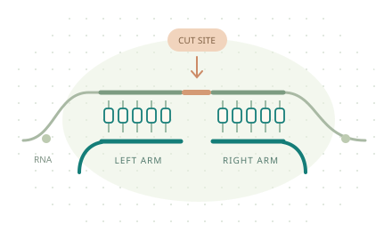

Find the site.
Shape the design.
Compare recognition windows, inspect binding arms,
and see the evidence behind each candidate.

A TARGET WINDOW. TWO BINDING ARMS.Start a design.
Run the analysis locally, then bring the results into this workspace.
Choose your RNA
Use a single transcript and a defined cleavage motif.
Evaluate the trade-offs
Compare accessibility, arm lengths and reference matches.
Take a design forward
Inspect the evidence and export sequences for the next step.
This browser workspace reviews saved results. RNA folding and reference screening run in the desktop application or CLI.
The site landscape
Where does the recognition window sit, and how accessible is it?
Window unpaired probability; grey indicates missing data.
Select a design
—
—RIGHT DNA ARM · 5′→3′—Candidate library
| Design | Cut site | Recognition window | Arms (nt) | Accessibility | Score | Exact hits | Evidence |
|---|
Select a row to review its sequences and reference matches. Scores compare candidates, not cleavage probabilities.
Design details
Sequences
Key features
More features
Design notes and interpretation
Raw design record
Reference matches
No reference specified
| Transcript | Gene / category | Start | Arm mismatches | Cut motif | Matched sequence |
|---|
Analysis record
Review the reference, model settings and the limits of this run.
Run notes
Parameters and reference metadata
Scope & interpretation
Zyme Site Designer prioritizes recognition windows using sequence rules, RNA accessibility, hybridization estimates and a specified reference screen. Scores are design priorities, not probabilities of cleavage. Missing values stay unavailable, not zero.
Accessibility and thermodynamic estimates do not determine cleavage rate. Reference matches need experimental interpretation. Full partzyme sequences are produced only when a defined catalytic and trigger scaffold is supplied.